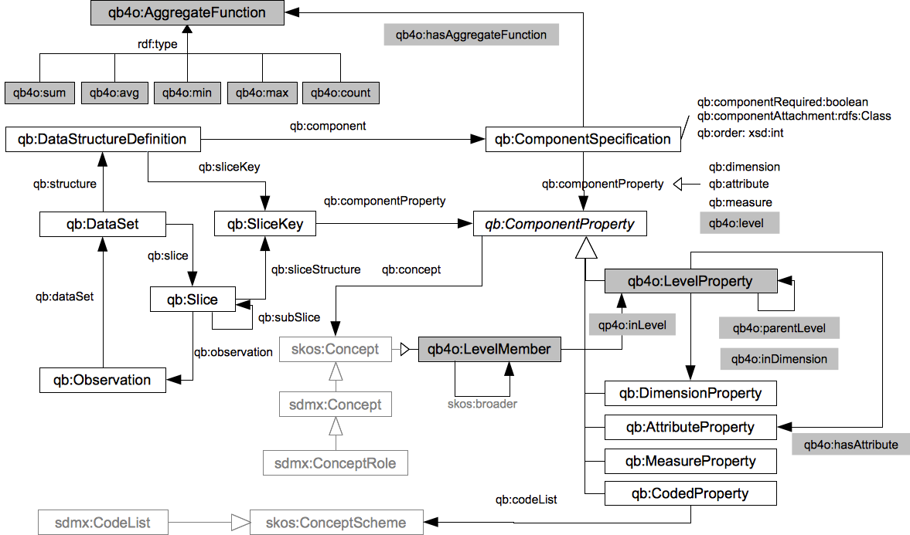

Last update:
2012-07-08
Editors:
Lorena Etcheverry (Instituto de Computación, Universidad de la República, Uruguay)
Alejandro A. Vaisman (Department of Computer & Decision Engineering (CoDE), Université Libre de Bruxelles, Belgium)
The Data Cube vocabulary (QB) is a proposal by the W3C Government Linked Data Working Group that allows to publish statistical data on the web using the RDF (Resource Description Framework) standard. The QB4OLAP vocabulary is an extension to the Data Cube vocabulary that allows to represent OLAP cubes in RDF, and also allows to implement OLAP operators (such as Roll-up, Slice, and Dice) as SPARQL queries directly on this RDF representation.
Status of this document
This is an editor's draft without any formal standing. It is not endorsed by any organization. Anything in this document is still subject to change at this point. The editors seek feedback on the document. Please send any comments to the project's Google Group.
Business intelligence (BI) comprises a collection of techniques used for extracting and analyzing business data, to support decision-making. As part of the BI machinery, On-Line Analytical Processing (OLAP) tools and algorithms allow querying large multidimensional databases called data warehouses (DW).
Since the mid 90's, DW and BI applications have been built to consolidate enterprise business data, allowing taking timely and informed decisions based on these data. The availability of enormous amounts of data from different domains is calling for a shift in the way DW and BI practices are being carried out. It is becoming clear that the traditional approach, where day-to-day business data produced in an organization is collected, cleansed and consolidated in a DW for data analysis, needs to be revised. We believe that the Semantic Web (SW) will most likely be an scenario where OLAP-style data analysis will be crucial in the near future.
Therefore, SW technologies will be needed to model, manipulate, and share multidimensional data. To achieve this, the definition of a precise vocabulary allowing representing adequately OLAP data on the SW is required. Over these vocabulary, multidimensional models and OLAP operators can be defined. The (W3C candidate) Data Cube vocabulary follows a model initially devised for analyzing statistical data, which does not cover all the needs of a vocabulary oriented to support BI analysis on the SW.
The present work is oriented to cover such need. Concretely, we propose the QB4OLAP vocabulary which adds to QB the capability of representing dimension levels, level members, rollup relations between levels and level members, and associating aggregate functions to measures. The QB4OLAP vocabulary is compatible with QB, in the sense that QB4OLAP cube schemas can be built on top of data cube instances (observations) already published using QB. Existing applications, or applications that do not require OLAP style-analysis, can still use the QB schema and instances. Therefore, the cost of adding OLAP capabilities to existing datasets is the cost of building the new schema, in other words, the cost of building the analysis dimensions. Conversely, cubes built over QB4OLAP from scratch can be transformed into QB cubes in order to be exploited by existing applications supporting the latter. As in the case above, the cube instances remain unchanged.
Although QB can define the structure of a cube (via the Data Structure Definition), it does not provide a mechanism to represent an OLAP dimension structure (i.e., the dimension levels and the relationships between levels). However, QB allows representing hierarchical relationships between level members in the dimension instances, using the SKOS vocabulary.
Also, the QB vocabulary does not provide direct support for OLAP operations. In spite of this, OLAP operations can be defined over a structure based on QB, although in a limited way. For example, Roll-Up is not supported since dimension levels are not modeled, neither are the aggregate functions for each measure (the latter also prevents support for the Slice operator). The same issues apply to Drill-down. Finally, Dice is partially supported by QB, given that the FO formula σ can only involve cube measures (again, because of the lack of support of dimension levels) It is worth noting that Slices, as defined in QB, represent subsets of observations. Moreover, they are not defined as operators over an existing cube (as in OLAP), but as new structures and new instances (observations) that may be considered as the application of constraints over an existing dataset.
The QB4OLAP vocabulary proposes to extend QB in order to support the following concepts, defined in classic MD models for OLAP and not modeled in QB:
skos:broader property
In OLAP, data are organized as hypercubes whose axes are called dimensions. Each point in this multidimensional space is mapped into one or more spaces of measures, representing facts that are analyzed along the cube’s dimensions. Dimensions are structured in hierarchies that allow analysis at different aggregation levels. The actual values in a dimension level are called members, which can also have properties or attributes. Members in a dimension level must have a corresponding member in the upper level in the hierarchy, and this correspondence is defined through so-called rollup functions.
A well-known set of operations is defined over cubes. We present some of these operations next. They are based on the recently proposed Cube Algebra [CA].
Roll-Up summarizes data at a higher level in a dimension hierarchy. It receives a cube C , a dimension D ∈ C , a dimension level lu ∈ D such that ll →∗ lu , and a set of aggregate functions f , Roll-Up(C, D, lu, f) returns a new cube C′ where measures are aggregated along D up to the level lu. Analogously, Drill-Down disaggregates previously summarized data, and can be considered the inverse of Roll-Up. Note that this requires to store the aggregation path.
Slice receives a cube C,and a dimension D ∈ C, and removes D from the cube. Measure values in the cube are aggregated along dimension D up to level 'All' before removing the dimension, using the aggregate functions associated with each measure.
Dice receives a cube C , and a first order formula σ over measures and levels in C, and returns a new cube C′ such that the elements in C′ are the ones that satisfy σ.
In order to illustrate the use of the QB4OLAP vocabulary we present a small example, extracted from StatsWales report number 028727 and Household projections by district, England, 1991-2033, which contains household projections (in thousands) by district in the UK. We want to analyze the household projection (a measure) along the dimensions geographic location and date. Let us call these dimensions geoDim and dateDim, respectively. Dimension geoDim is organized in a hierarchy of levels: Unitary Authority (UA), Government Office Region (GOR) and Country, while dimension dateDim has only one level: year. We can build an OLAP cube householdCS with who dimensions (geoDim and dateDim) and one measure (household). The following table shows a small instance of the cube householdCS.
| Country | GOR | UA | 2006 | 2007 | 2008 |
|---|---|---|---|---|---|
| England | South East | Milton Keynes | 92 | 94 | 96 |
| Reading | 58 | 58 | 60 | ||
| South West | Bournemouth | 71 | 72 | 73 | |
| Wales | Wales | Cardiff | 132.1 | 134.2 | 136.7 |
| Newport | 58.7 | 59 | 69.6 |
OLAP operators can be applied to these data. For example, we would like to obtain the total household for each Government Office Region in each year. This corresponds to the application of the Roll-Up operator on the geoDim dimension, up to the GOR level. The aggregate function to compute the values is associated with each measure in the schema definition, in this case the sum function, and it is used to compute the household projection for each GOR. The table below shows the results of applying the Roll-Up operator.
| Year | ||||
|---|---|---|---|---|
| Country | GOR | 2006 | 2007 | 2008 |
| England | South East | 150 | 152 | 156 |
| South West | 71 | 72 | 73 | |
| Wales | Wales | 190.8 | 193.2 | 196.3 |
The following picture shows classes, properties and instances in the QB4OLAP vocabulary (grey background). Classes and properties from QB are also included (white background).
Classes: qb:Attachable qb:AttributeProperty qb:CodedProperty qb:ComponentProperty qb:ComponentSet qb:ComponentSpecification qb:DataSet qb:DataStructureDefinition qb:DimensionProperty qb:MeasureProperty qb:Observation qb:Slice qb:SliceKey
Properties: qb:attribute qb:codeList qb:component qb:componentAttachment qb:componentProperty qb:componentRequired qb:concept qb:dataSet qb:dimension qb:measure qb:measureDimension qb:measureType qb:observation qb:order qb:slice qb:sliceKey qb:sliceStructure qb:structure qb:subSlice
Classes: qb4o:LevelProperty qb4o:LevelMember qb4o:AggregateFunction
Properties: qb4o:level qb4o:inLevel qb4o:inDimension qb4o:parentLevel qb4o:hasAggregateFunction
Instances: qb4o:sum qb4o:avg qb4o:count qb4o:min qb4o:max
As in QB, QB4OLAP uses the qb:DataStructureDefinition class to define the structure of data sets. While in QB the structure of a data set is defined in terms of dimensions, measures and attributes, in QB4OLAP the structure is defined using levels, measures and attributes.
The declaration of the structure of the data set has several benefits, some of them where already presented in [QB]:
The QB4OLAP vocabulary represents the levels, attributes and measures as RDF properties. To represent levels, it adds qb4o:LevelProperty as a sub-class to the QB abstract qb:ComponentProperty class. As presented in Section 2, levels are hierarchically organized within a dimension. For each level, its parent in the rollup hierarchy is declared using the qb4o:parentLevel property. Levels are linked to its corresponding dimension via the qb4o:inDimension property.
The semantics of data structure definitions may be enriched using the skos:closeMatch property to link QB4OLAP concepts with concepts already defined in external vocabularies (e.g: in our running example the year level in the geoDim dimension can be related to the year concept in DBpedia).
Aggregate functions are used to compute the aggregate value of measures, for example when performing a Roll-Up. These functions can be expressed in QB4OLAP using instances of the qb4o:AggregateFunction class, and each measure can be associated with an aggregate function via the qb4o:hasAggregateFunction property. This is also considered part of the data structure definition.
Five aggregate functions are defined in QB4OLAP:
In our running example there are two dimensions to represent: geographic location (geoDim) and time (dateDim). There is a single measure which corresponds to household projection, measured in thousands of households, and to aggregate measure values the sum function has to be applied. We define the following concepts:
Geographic Location. We define the geoDim dimension and the three levels in its hierarchy, linking them to its related concepts in the Ordnance Survey Administrative Geography Ontology.
eg:geoDim a qb:DimensionProperty. eg:unitaryAuthority a qb4o:LevelProperty; qb4o:inDimension eg:geoDim; qb4o:parentLevel eg:governmentOfficeRegion; skos:closeMatch adgeo:UnitaryAuthority. eg:governmentOfficeRegion a qb4o:LevelProperty; qb4o:inDimension eg:geoDim; qb4o:parentLevel eg:country; skos:closeMatch adgeo:GovernmentOfficeRegion. eg:country a qb4o:LevelProperty; qb4o:inDimension eg:geoDim; skos:closeMatch adgeo:CountryInUk.
Time. We define the timeDim dimension and the only level in its hierarchy, linking them to its related concepts in the DBPedia.
eg:dateDim a qb4o:DimensionProperty. eg:year a qb4o:LevelProperty; qb4o:inDimension eg:dateDim; skos:closeMatch db:Year.
Measure. This measure property will link each observation to the measure value.
eg:household a qb:MeasureProperty; skos:closeMatch db:Household.
We need to declare a qb:DataStructureDefinition resource to define the structure of the data set, which in turn will reference a set of qb:ComponentSpecification resources. The qb:DataStuctureDefinition will be reusable across other data sets with the same structure.
Component specifications allow, not only to state that a certain qb:ComponentProperty property is related to a data set structure, but also to specify properties of this relationship. For example, the qb4o:hasAggregateFunction property allows to specify which aggregation function corresponds to a certain measure in a data set structure.
The data structure definition of our running example can be declared by:
eg:householdCS a qb:DataStructureDefinition; qb:component [qb4o:level eg:unitaryAuthority]; qb:component [qb4o:level eg:year]; qb:component [qb:measure eg:household; qb4o:hasAggregateFunction qb4o:sum].
Notice that, instead of stating that a data set structure is defined by a set of dimensions (as in QB), in QB4OLAP a set of levels is declared. These levels define the granularity level of all the observations in the data set.
As already mentioned the QB4OLAP vocabulary structures dimensions in terms of dimension levels. The instances that populate dimension levels are called level members, and they are represented as instances of type qb4o:LevelMember. Rollup relations relate level members from one level to its correspondent level member in upper levels in the hierarchy. These relations are modeled using the skos:broader property. The example below shows three level members: the "Borough of Reading", which is a unitary authority and is contained in the "South East" government office region of "England". In this case, the resources that describe each of these level members belong to external vocabularies (from Data.gov.uk), but could be defined locally. Level members are linked to its corresponding level in the dimension structure of the data set using the qb4o:inLevel property.
ns0:00mc qb4o:inLevel eg:unitaryAuthority; rdfs:label "The Borough of Reading@en"; skos:broader ns1:J. ns1:J qb4o:inLevel eg:governmentOfficeRegion; rdfs:label "South East@en" ; skos:broader ns2:921. ns2:921 qb4o:inLevel eg:country; rdfs:label "England@en".
A DataSet is a collection of observations or facts that correspond to a given data structure definition.
Each observation represents a point in the multidimensional space formed by dimensions, and for each of these points a set of measure values is recorded. For each data set, a resource is created and typed as qb:DataSet, and it is linked to the corresponding data structure definition using the qb:structure property. Each observation is represented as an instance of type qb:Observation and is linked to the containing data set using the qb:dataSet property.
The example below shows the definition of a data set corresponding to our running example and an observation, which corresponds to the Borough of Reading in 2007 from the table presented in Section 3.
eg:dataset_hh a qb:DataSet; rdfs:label "Household in UK"@en; qb:structure eg:householdCS. eg:o1 a qb:Observation; qb:dataSet eg:dataset_hh ; eg:unitaryAuthority ns0:00mc ; eg:year db:2007; eg:household 58.
OLAP operators can be implemented over cubes specified using QB4OLAP vocabulary as SPARQL 1.1 queries. Moreover, provided that the vocabulary models all the structural metadata of the cube (namely: levels, level member, their relationship, rollup relations between level members, hierarchical relationships between levels, aggregate functions and their relationship with measures), these SPARQL queries can be automatically generated.
Since OLAP cubes are represented as RDF graphs, and the result of any OLAP operator must be also a cube, OLAP operators have to be implemented as SPARQL CONSTRUCT queries. Below we present, as an example, the SPARQL query that implements the Roll-Up operator which result was presented in Section 3.
CONSTRUCT {
?id a qb:Observation .
?id qb:dataSet eg:dataset-hh1 .
?id eg:year ?year .
?id eg:governmentOfficeRegion ?gor .
?id eg:household ?sumHhold }
WHERE{{
SELECT ?gor ?year (SUM(?hhold) AS ?sumHhold)
(iri(fn:concat("http://example.org/hhold#", "hholdGOR","_",
fn:substring-after(?gor,"http://example.org/hhold#"),"_",
fn:substring-after(?year,"http://example.org/hhold#"))) AS ?id)
WHERE {
?o qb:dataSet eg:dataset-hh . ?o eg:year ?year .
?o eg:household ?hhold . ?o eg:unitaryAuthority ?ua .
?ua skos:broader ?gor . ?gor qb4o:inLevel eg:governmentOfficeRegion }
GROUP BY ?gor ?year}}
| PREFIX | URI | VOCABULARY |
|---|---|---|
| rdf | http://www.w3.org/1999/02/22-rdf-syntax-ns# | RDF core |
| rdfs | http://www.w3.org/2000/01/rdf-schema# | RDF Schema |
| skos | http://www.w3.org/2004/02/skos/core# | Simple Knowledge Organization System |
| qb | http://purl.org/linked-data/cube# | The Data Cube vocabulary |
| db | http://dpedia.org/resource/ | DBpedia |
| adgeo | http://statistics.data.gov.uk/def/administrative-geography/ | Administrative Geography ontology from Data.gov.uk |
| ns0 | http://statistics.data.gov.uk/doc/local-authority-district/ | An ontology describing all local authority districts in the UK. |
| ns1 | http://statistics.data.gov.uk/id/government-office-region/ | An ontology describing all government office regions in the UK. |
| ns2 | http://statistics.data.gov.uk/id/country | An ontology describing all countries in the UK. |
| qbp | http://purl.org/olap# | The QBPlus vocabulary |
qb4o:LevelProperty Sub class of: qb:ComponentProperty
qb4o:LevelMember Sub class of: skos:Concept
qb4o:level ( qb4o:LevelProperty -> qb:ComponentProperty )
qb:ComponentProperty which makes explicit that the component is a level.
qb4o:inDimension ( qb4o:LevelProperty -> qb:DimensionProperty )
qb4o:inLevel ( qb4o:LevelMember -> qb4o:LevelProperty )
qb4o:parentLevel ( qb4o:LevelProperty -> qb4o:LevelProperty )
qb4o:AggregateFunction Sub class of: rdfs:Class
qb4o:hasAggregateFunction ( qb:ComponentSpecification -> qb4o:AggregateFunction )
qb4o:sum Instance of: qb4o:AggregateFunction
qb4o:avg Instance of: qb4o:AggregateFunction
qb4o:count Instance of: qb4o:AggregateFunction
qb4o:min Instance of: qb4o:AggregateFunction
qb4o:max Instance of: qb4o:AggregateFunction